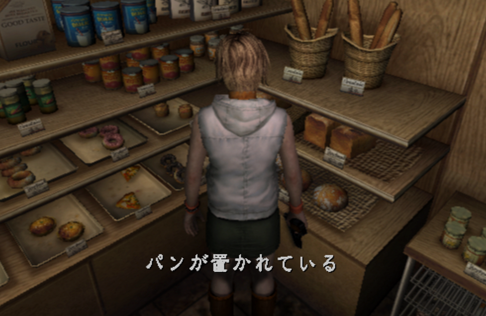
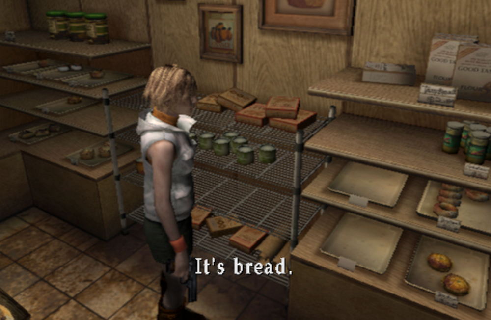
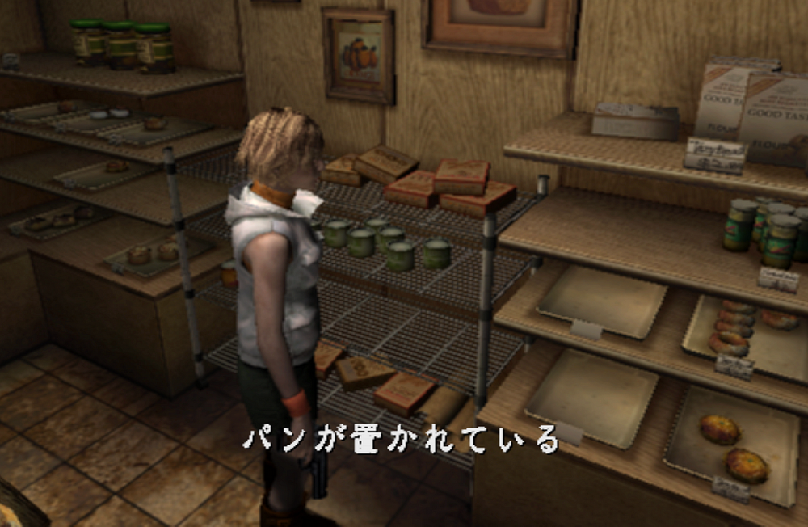
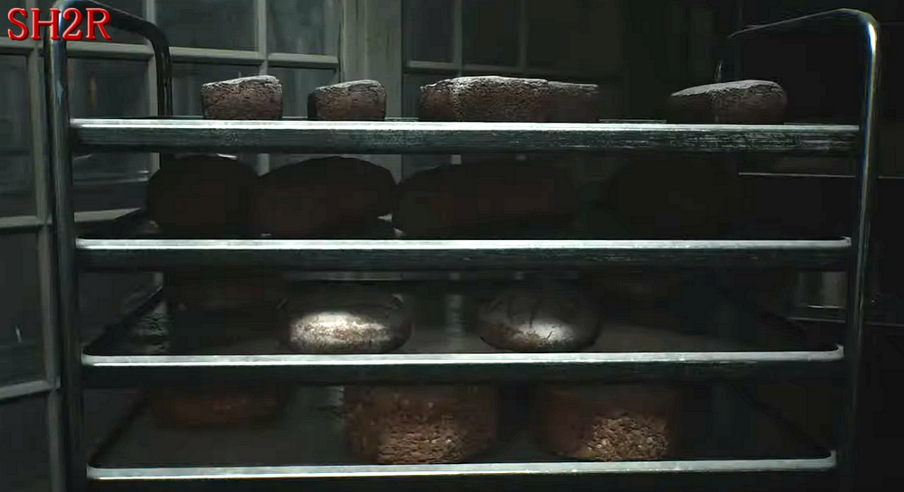
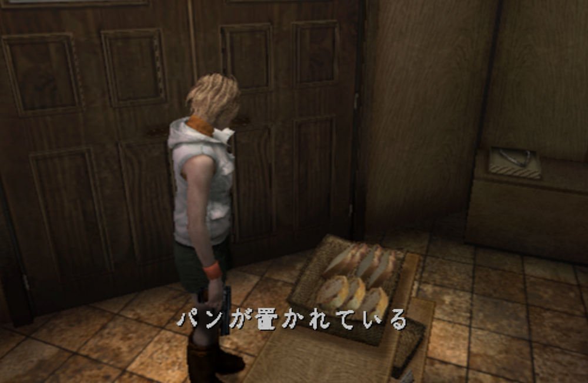

[SH3] Heather Never Say Pan Desu in Japanese🍞

The "It's Bread" Meme Isn't Known in Japan
![[SH3] Heather Never Say Pan Desu in Japanese](img/da11.png)
This is a mirror of the DeviantArt version linked above, provided as a backup and for easier access.

The meme "It's bread," from Silent Hill 3 is well known overseas. So some people might think it's also saying "Pan Desu" in Japanese, given that the game is Japanese-made. And in Japanese, "bread" is "pan."


But this meme is hardly recognized in Japan, because it doesn't say that in Japanese. So when bread showed up in SH2R, a lot of people here wondered, "What's this trophy/achievement?"

English: It's bread.
Japanese: パンが置かれている
Well, in Japanese, her line is phrased more like "Bread is placed here" or "There is bread placed here," which is a full sentence. It doesn't have the same casual tone. That's a shame.

Since the original was in Japanese, the English came later, but I would say that in this case the English turned out to be the more successful version.